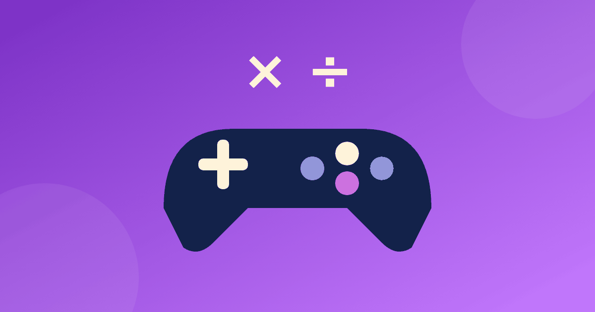

Игры для таблицы умножения: чем игра отличается от тренажёра

Когда родители набирают в поиске «таблица умножения игра», они обычно хотят одного: чтобы ребёнок занимался и не страдал. Это возможно, но только если понимать, что именно мы берём в руки. Игра и тренажёр решают разные задачи, и лучше всего они работают вместе.
Таблица умножения игра и тренажёр — в чём разница
Игра создаёт интерес и общение. Ребёнок хочет выиграть, смеётся, просит ещё раз. Но в игре примеры часто попадаются случайно: одни он решит десять раз, другие ни разу.
Тренажёр действует иначе. Таблица умножения тренажер подбирает примеры по порядку, возвращает к ошибкам, показывает, как получается ответ. Он не такой весёлый, зато даёт ровную, предсказуемую работу. Поэтому запрос «тренажёр таблица умножения и деления» ищут те, кому нужна именно систематичность. Удобная схема такая: пять минут тренажёра, потом игра, чтобы закрепить уже знакомое. Если вам нужен именно тренажёр таблица умножения и деления, выбирайте тот, где деление идёт сразу после умножения тех же чисел.
Практический пример. Ребёнок 2 класса учит двойку и тройку. Вечером он пять минут решает примеры в тренажёре, а в выходные играет с вами в «найди пару» на тех же столбиках. Если к игре подключить пятёрку, которую он ещё не знает, веселье быстро сменится растерянностью. Поэтому слова «таблица умножения тренажер» и «таблица умножения игра» в вашем плане должны стоять рядом, а не вместо друг друга.
Как выбрать игру
- Игра должна проверять то, что ребёнок уже начал знать. Новый столбик сначала разберите спокойно, а в игру отдайте только знакомое.
- Ошибка не должна «наказываться». Если за промах сгорают очки и звучит сирена, ребёнок начнёт бояться отвечать.
- Правила объясняются за минуту. Сложные правила съедают время, отведённое на математику.
- Лучше без таймера и общего рейтинга, особенно в 1–3 классе.
- Игра заканчивается сама, за 10–15 минут, а не тянется до слёз.
Онлайн-игры: на что смотреть
Онлайн удобно, когда рядом нет партнёра по игре. Но перед тем как отдать ребёнку планшет, проверьте несколько вещей.
- Видит ли ребёнок объяснение ошибки или только красный крестик.
- Нет ли таймера, жизней и таблицы лидеров, которые заставляют спешить.
- Нет ли рекламы посреди примера и покупок внутри игры.
- Подходит ли уровень: 1–2 класс обычно начинает с 2, 3, 5 и 10.
- Нужна ли регистрация и куда уходят данные ребёнка.
Если игра превращает математику в гонку за очками, ребёнок запомнит не таблицу, а страх проиграть. Лучше выбрать спокойный вариант и играть 10–15 минут, а не час.
Четыре офлайн-игры без подготовки
«Морской бой» с таблицей
Нарисуйте таблицу произведений 10 × 10 или распечатайте готовую. Каждый игрок тайно отмечает на своём листе пять «кораблей», то есть пять чисел из таблицы, например 24, 36, 42, 56 и 63. Чтобы выстрелить, нужно назвать пример и ответ: «6 × 4 = 24». Если у соперника отмечено 24, это попадание. Неверный ответ — выстрел пропадает. Выигрывает тот, кто первым нашёл все пять кораблей.
«Найди пару»
На одних карточках пишем примеры, на других ответы, раскладываем рубашкой вверх. Переворачиваем две: подходят 7 × 3 и 21 — забираем пару. Для деления добавьте 21 ÷ 3 и 7. Игра хорошо подходит, когда играют вдвоём или втроём. О других идеях для малышей — в статье про игры для 1–2 класса.
«Бинго»
У каждого игрока поле 3 × 3 с ответами, например 12, 18, 24, 6, 15, 21, 9, 27, 30. Ведущий читает примеры: «3 × 8», «15 ÷ 3», а игроки закрывают подходящее число фишкой. Первый, закрывший ряд, кричит «Бинго». Хорошо, что отвечать вслух не нужно, и тихому ребёнку так проще.
«Угадай число»
Один загадывает число из таблицы и даёт подсказки, второй задаёт вопросы. Например, подсказка: «Оно в строке на 7, больше 30 и меньше 40». Ответ — 35, потому что 7 × 5 = 35. Играя, ребёнок перебирает столбик и сам рассуждает, а не вспоминает по порядку.
Хороший ритм на неделю — две-три игры по 10–15 минут и пара коротких занятий с тренажёром. Так игра остаётся праздником, а не обязанностью, а систематичная работа идёт отдельно.
Как не превратить игру в гонку
Играйте командой против таблицы: за каждый верный ответ вы вдвоём кладёте фишку в общую кучу, цель — собрать 20. Отвечайте по очереди, без «кто быстрее». Дайте право попросить подсказку, например, посмотреть на картинку или собрать пример из столбика. И обязательно заканчивайте победой: пусть последний ход будет таким, чтобы ребёнок справился.
Если нужна игровая форма на экране, подойдёт наш тренажёр. Он объясняет наглядно, занятия короткие, таймера и рейтингов нет, есть бесплатная часть, регистрация не нужна. Общие правила занятий описаны в статье «Как выучить таблицу умножения».